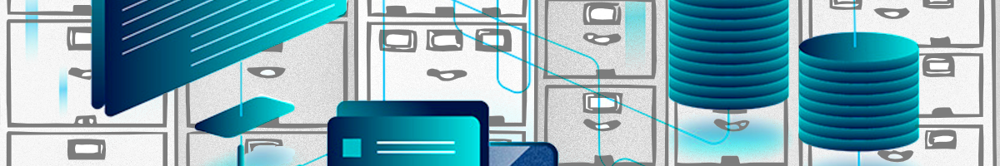

Banco de Dados - I
Docente: Cristiano Correa de Moraes
Descrição
Banco de Dados I é o componente curricular que visa o desenvolvimento das competências necessárias para: Realizar gestão de bancos de dados; Planejar e desenvolver projetos de sistemas computacionais; Atuar de acordo com princípios éticos nas relações de trabalho; Levantar requisitos junto ao cliente e/ou equipe de trabalho; Otimizar e aprimorar projeto de software conceitual, lógico, estrutural, físico e gráfico; Documentar aplicações e sistemas de informação de forma completa; Implementar projeto de banco de dados garantindo a integridade referencial; Gerenciar bancos de dados; Modelar banco de dados; Elaborar modelo conceitual, lógico e físico de banco de dados.
Bases Tecnológicas
- Evolução, característica e operacionalização nas organizações
- Estrutura de Banco de Dados
- Estrutura de banco de dados
- Modelo Conceitual
- Modelo conceitual
- Modelo Conceitual
- Modelo lógico
- Modelo Conceitual
- Dicionário de dados
- Ferramenta CASE
- Ferramenta CASE
- Ferramenta CASE
- Grau de cardinalidade: Definição e classificações
- Entrega do Projeto Prático
- Dicionário de Dados
- Tipos de restrições de integridade e conceitos
- Atividade de Recuperação
- Dicionário de Dados
- Conceitos de autorrelacionamento: Reflexivo, Recursivo
- Dicionário de Dados
- Normalização de tabelas
- Modelo Lógico
- Especialização e generalização (superclasses e subclasses, supertipo e subtipos): Conceitos e utilização
- Modelo Conceitual
- Conceito de domínio
- Modelo Lógico
- Conceito de tabelas
- Modelo Lógico
- Ferramenta CASE
- Construção de projeto lógico de banco de dados
- Modelo Lógico
Clique na casinha para voltar →